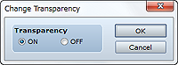
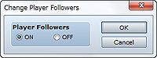
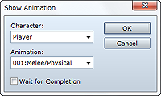
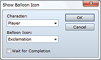

Controls the transparency of the party moving on the map.
Select On to hide the party and Off to display it.

Controls whether the walking graphics of the second and subsequent party members are displayed.
Select On to show the other party members and Off to hide them.
• If there are five or more party members, only walking graphics for the first four will be displayed.
Displays the walking graphics of party members at the same position as the first actor. There are no settings to be made for this command.

Displays an animation on the map.
Specify the display location based on the position of the player or the event.
Specify the animation to display.
When this option is selected, event processing stops until the animation is finished displaying.
• This command cannot be used in battle events.
• If you want to display an animation during a battle, use the Show Battle Animation event command.

Displays a balloon icon indicating an emotion above the party or event. There are ten emotion icons in all, such an exclamation point (!) for surprise and a light bulb for inspiration.
Specify the display location based on the position of the player or the event.
Specify the balloon icon to display.
When this option is selected, event processing stops until the balloon icon is finished displaying.
Temporarily clears an executing event. There are no settings to be made for this command. The cleared state will continue until the party moves to another map.
• This command cannot be used in battle events.